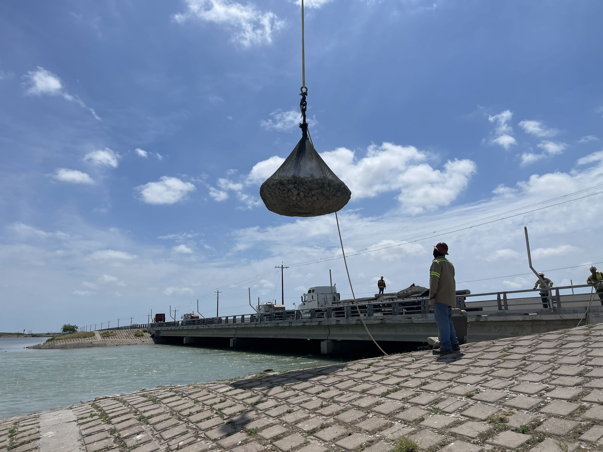

01
Coastal processes and numerical modeling
Wave, water-level, current, sediment transport, morphology, shoreline change, and sea-level analyses that establish defensible design conditions and clarify project performance.
Coastal engineering consulting
MAR provides principal-led support for shoreline stabilization, marsh and wetland restoration, dredging and beneficial use, coastal structures, passing-vessel studies, and coastal process modeling. We work with public agencies, ports, municipalities, waterfront owners, and engineering firms.

MAR Engineering Consulting
Senior technical support without the overhead or layers of a large firm.
MAR can lead a focused coastal assignment or integrate into a larger architecture, engineering, or environmental team. Clients work directly with the principal responsible for the analysis, recommendations, documents, and coordination.
Our mission is to provide the coastal engineering judgment and capacity needed to make a sound decision, obtain approvals, complete the design, or move construction forward.
Services
Services are available for complete coastal assignments or as specialist support to an owner, prime consultant, or multidisciplinary project team.
Wave, water-level, current, sediment transport, morphology, shoreline change, and sea-level analyses that establish defensible design conditions and clarify project performance.
Evaluation of vessel-generated waves, drawdown, surge, currents, and shoreline response for navigation channels, ports, terminals, marinas, and waterfront infrastructure.
Revetments, breakwaters, groins, bulkheads, piers, scour protection, habitat benches, and hybrid systems designed around site processes, access, constructability, and service life.
Marsh creation, hydrologic restoration, constructed treatment wetlands, living shorelines, reef features, beach and dune systems, and bird island habitat.
Shoaling assessments, dredge templates, sediment source investigations, material placement, beneficial use strategies, beach nourishment, and restoration planning.
Feasibility studies, alternatives development, agency coordination, Section 10/404 support, design criteria, construction documents, cost estimates, bidding, and construction-phase engineering.
Construction support
Construction-phase support for restoration and shoreline infrastructure assignments includes site observation, contractor coordination, field engineering, and evaluation of access, sequencing, material placement, and site conditions.


Images reflect relevant professional experience and do not represent MAR Engineering Consulting contract history.
Client support
MAR provides specialized coastal engineering where a client needs senior technical judgment, additional delivery capacity, or a coastal specialist within a larger team.
Feasibility, alternatives analysis, coastal restoration design, shoreline stabilization, dredging, permitting, grant-funded project delivery, bid documents, and construction-phase engineering.
Wave, current, shoaling, sediment transport, and vessel wake analysis for navigation channels, piers, marinas, working waterfronts, bank stabilization, and dredged-material management.
Coastal engineering subconsultant support for pursuits and project delivery, including numerical modeling, design criteria, coastal structures, restoration, technical review, and client-facing coordination.
Site-specific analysis and design for shoreline erosion, coastal loading, waterfront infrastructure, permitting, constructability, maintenance planning, and long-term asset performance.
Working model
Clients work directly with our team from scoping through delivery. MAR can lead a defined coastal engineering assignment, provide independent technical review, or integrate as a coastal specialist within a larger project team.
Confirm the project decision, physical processes, available data, constraints, and required level of analysis.
Use field data, desktop analysis, calculations, or numerical modeling appropriate to the project stage.
Compare performance, permitting, constructability, environmental effects, maintenance, cost, and uncertainty.
Advance the selected approach through design criteria, plans, specifications, permits, bidding, and construction support.

Principal
Our Lead has more than 14 years of experience leading coastal resilience, restoration, navigation, and shoreline infrastructure projects. His work spans coastal process modeling, shoreline stabilization, marsh and wetland restoration, dredging and beneficial use, coastal structures, regulatory coordination, and construction-phase engineering.
He has managed multidisciplinary programs for municipalities, counties, ports, state agencies, and federal partners, with an emphasis on making technically complex work understandable and actionable. He holds a bachelor’s degree in coastal engineering with a minor in oceanography and began his career developing prototype wave-energy and wave-dissipation systems.
Originally from Puerto Rico, he grew up sailing and fishing in the Caribbean. That connection continues to shape his commitment to practical engineering that protects communities, infrastructure, and coastal habitats.
Contact